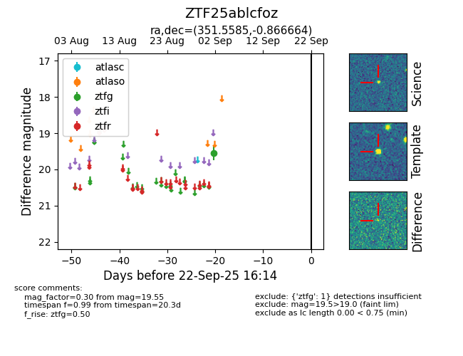

FINK: ZTF25ablcfoz
Lasair: ZTF25ablcfoz
ALeRCE: ZTF25ablcfoz
ZTF25ablcfoz (ztf,fink)
equatorial (ra, dec) = (351.5585,-0.86666)
galactic (l, b) = (81.4853,-56.71915)

last ztfg=19.55
1 ztfg detections